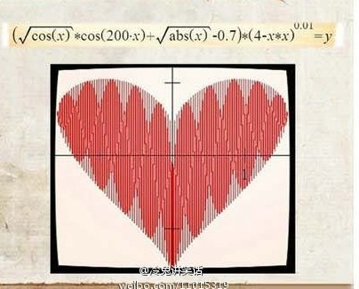
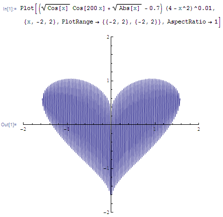
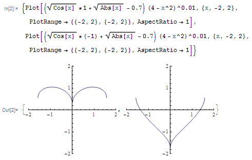
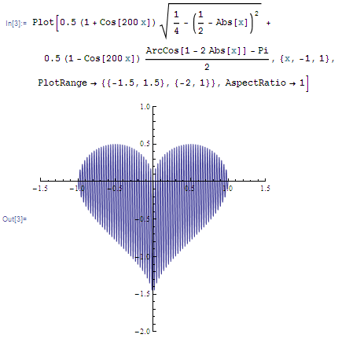
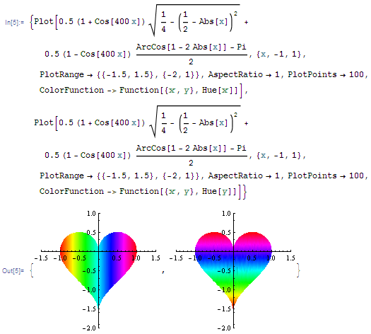
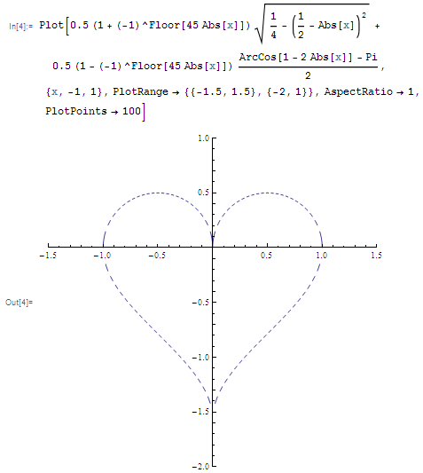

[函数] 又见心形曲线
话说今晚同学在QQ上给我发了下面这张心形函数图

(37.35 KB)
2012-9-28 03:52
不过我当时正在玩Q版沙罗曼蛇（嗯，最近怀旧嘛，不过这个Q版的比原版难很多，我接了N次机才玩到第6关啊擦……）所以并没细心看。
玩累了之后才回过头来看看，一看之下，咦？奇怪，上面的式子明明是一条函数，怎么会整出一个区域来？而且中间还有这种效果？
仔细看下，再看到解析式中有个 $\cos(200\cdot x)$，噢！原来这并不是一个区域，而是一条很密的上下摆动的函数曲线。
而中间那种效果只是因为线太密了，密到粘在一起，显示出来就会这样，这跟作图的软件有关，用别的软件作出来的效果会不同，比如我用 Mathematica7 作同样的函数得到如下。

(19.18 KB)
2012-9-28 03:52
好，该琢磨解析式了。想了想，咦，其实这构造原理很简单。
既然“密”是通过 $\cos(200\cdot x)$ 形成的，而且是上下摆动，那么当 $\cos(200\cdot x)$ 取 $\pm1$ 的那些点就是心形轮廓上面的点，因此如果将 $\cos(200\cdot x)$ 分别用 $1$ 和 $-1$ 代替，得到的两条函数便是这个心形的上下两条轮廓，如下图所示。

(12.65 KB)
2012-9-28 03:52
明白了这一点后，就可以自己重新构造一个出来。具体来说，设上下两条轮廓线分别为 $f(x)$ 和 $g(x)$，那么函数\[y=0.5(1+\cos nx)f(x)+0.5(1-\cos nx)g(x)\]便是所求，其中 $n$ 越大线就越密。
比如我用两个半圆来作 $f(x)$，用两条反三角函数作 $g(x)$（要用到一些绝对值技巧），同样取 $n=200$ 就得到如下的函数及图形。
\[y=\frac12\bigl(1+\cos(200x)\bigr)\sqrt{\frac14-\left(\frac12-\abs x\right)^2}+\frac12\bigl(1-\cos(200x)\bigr)\frac{\arccos(1-2\abs x)-\pi}2\]

(18.07 KB)
2012-9-28 03:52
其实我个人感觉我整出来的这个比原来的看着还顺眼些 :D 嘿嘿。再华丽一点点，改变 $n$ 的值再加点颜色，可以有如下的效果。

(29.62 KB)
2012-9-28 03:52
你可以调整 $f(x)$, $g(x)$ 的一些系数改变形状，当然也可以自己去构造，而且也不一定要用 $\cos nx$，还可以搞搞其他样式，比如改为用 $-1$ 的幂结合高斯函数可以得到如下虚线心形。

(14.9 KB)
2012-9-28 03:52
OK，时间关系，先扯到这里。总之，大家尽情发挥，随便玩。
擦，真的好晚了，不闪就危险了！……
(1.01 KB)
2012-9-28 03:52 |
本主题由 kuing 于 2013-1-19 16:52 分类

 发表于 2012-9-28 03:52
发表于 2012-9-28 03:52
 发表于 2012-9-28 12:39
发表于 2012-9-28 12:39


 花是送给图图的，吼~不过作为其生父的你，代领就是啦~
花是送给图图的，吼~不过作为其生父的你，代领就是啦~